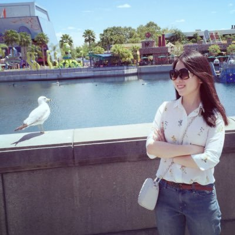
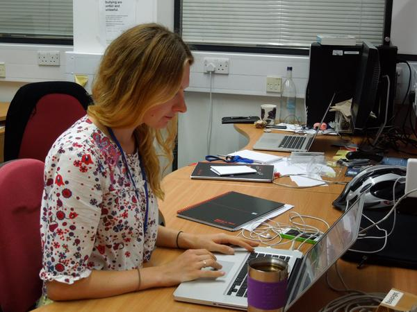

Group Members
Group Leader
Christopher Yau

From January 2020, I will be Professor of Artificial Intelligence at the University of Manchester and a Fellow at the Alan Turing Institute. I am co-Director of the Health Data Research-Alan Turing Institute Wellcome PhD programme in Health Data Science.
Until January 2020, I am Reader in Computational Biology based in the Centre for Computational Biology at the University of Birmingham . I was previously Associate Professor in Applied Statistics Genomics at the Wellcome Trust Centre for Human Genetics at the University of Oxford where I was a Group Leader at the Wellcome Trust Centre for Human Genetics. Prior to this, I was a Lecturer in Statistics in the Department of Mathematics at Imperial College. Hear me talk about my research and interests: Oxford-Stanford Big Data and Academy of Medical Sciences
Postdocs
Anas Rana

Anas obtained his PhD in Computational Biology from the University of Warwick before taking up a postdoc at the University of Oxford. He is now an MRC Research Fellow at the University of Birmingham.
Grad Students
Dominic Danks

Dominic is a Turing PhD student at the University of Birmingham jointly supervised by Professor Alastair Deniston, Dr Andrew Beggs and Theo Kyprioas (Nottingham). He is working on machine learning methodologies for biomedical problems.
Zhiyuan Hu

Zhiyuan is a third year Oxford CSC-NDM Prize student working on single cell methods for understanding the function of SOX2 in ovarian cancer. She also works on computational methods for understanding the role of nonsense mediated decay in cancer. She is jointly supervised by Professors Ahmed Ahmed.
Kaspar Martens

Kaspar is a final year Oxford OxWASP student working on interpretable machine learning. He is jointly supervised with Professor Chris Holmes.
Yun Feng

Yun is a second year Oxford NDM-CRUK Prize student working on cancer genomics modelling. He is jointly supervised by Dr David Church.
Toju Sillo

Toju is a clinical fellow studying for a PhD at the University of Birmingham jointly under the supervision of Professor Gary Middleton and Dr Andrew Beggs. She qualified from Medicine at the University of Oxford. She is currently a Specialist Registrar in GI Surgery.
Alumni
Leon Law (2019)

Leon was an Oxford OxWASP student working on kernel methods for structured data problems. He was jointly supervised by Associate Professor Dino Sejdinovic. He is now in Hong Kong working in the financial sector.
Siyu Chen (2018)

Siyu was a visiting student from Nankai University in China. She is working on Gaussian Process based clustering of time series cellular imaging data from high-throughput genetic perturbation studies with Anas Rana and Manuel Banzhaf.
Constantin Ahlmann-Eltze (2017)

Constantin was a visiting ERASMUS Masters student from the University of Heidelberg in Germany. He worked on dimensionality reduction problems for high-dimensional mixed data type observations. He is now a PhD student at EMBL.
Tammo Rukat (2015-2018)

Tammo was an Oxford SABS CDT student working on neural network based approaches for modelling biomedical data. Tammo was based at the Alan Turing Institute in 2017-18. His studentship was sponsored by Roche Data Science and he was jointly supervised by Dr Satu Nakhuri (Roche) and Professor Chris Holmes. He is now a Research Scientist at Amazon Berlin.
Kieran Campbell (2015-2018)

Kieran completed his PhD in 2017 working on pseudotemporal statistical models for gene expression analysis. He was jointly supervised with Dr Caleb Webber in the Department of Physiology, Anatomy and Genetics at Oxford. He is now a Banting Research Fellow at UBC.
Justina Zuraskiene (2015-2017)

Justina works on statistical methods for genomic data analysis. At Oxford, she has developed novel hierarchical clustering methods for single cell data and also nonparametric smoothing techniques for decoding Hidden Markov models. She obtained her PhD from the Systems Biology group at Imperial College London with Professor Michael Stumpf before joining the Yau group at the Wellcome Trust Centre for Human Genetics in Oxford. She is now a BRIDGE Fellow at the University of Birmingham.
Donatien Chedom-Fotso (2015-2017)

Doni was a joint postdoc with Professor Ahmed Ahmed in the Ovarian Cancer Laboratory at the University of Oxford. He worled on cancer genomics and evolutionary modelling in ovarian cancer. He developed a novel statistical approach for inferring the cellular prevalence of mutations using state-of-the-art long-read whole genome sequencing data. Doni is now Lead Data Scientist at The Rank Group..
Emma Pierson (2014-2015)

Emma completed her MSc by Research in Statistics in 2015 at the University of Oxford. Her research was on zero-inflated methods in single cell genomic data modelling. She is now completing a PhD at Stanford University.
Paul Kirk (2014-2015)

Paul was a postdoc in the group at the Wellcome Trust Centre for Human Genetics working on statistical methods for genomic analysis. He is now a Scientist at the MRC Biostatistics Unit in Cambridge.
Xiaole Zhang (2012-2014)
Xiaole completed his PhD in the Department of Mathematics at Imperial College London. His research is concerned with approximation inference methods in Bayesian Statistics, in particular, online variational methods for fitting Dirichlet Process Mixtures and Approximate Bayesian Computation techniques for Hidden Markov Models with intractable likelihood or transition densities. He was co-supervised by Ajay Jasra (NUS) and Nik Kantas (Imperial).
Phone
(000) 000-0000 x12387Address
1234 Somewhere Road #5432Nashville, TN 00000
United States of America